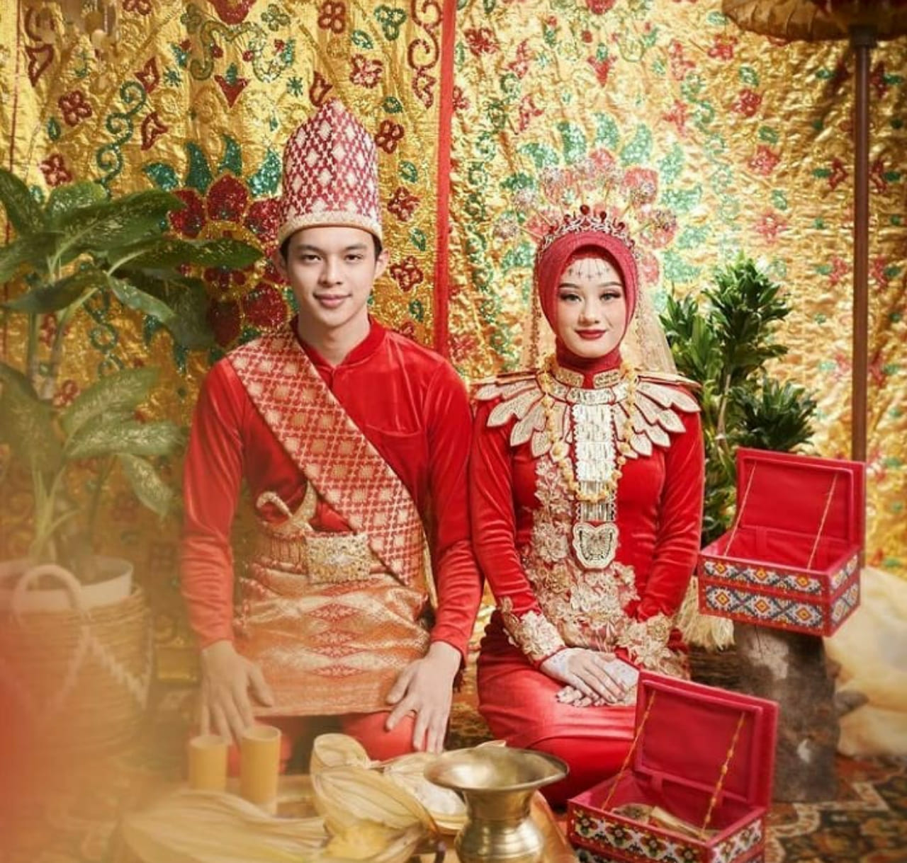

- 
-
Busana Suku Bolaang Mongondow adalah sebuah pakaian kulit kayu atau pelepah nenas, yang diambil dan diolah seratnya. Serat kayu tersebut diberi nama Lanut oleh warga sekitar, kain ini ditenun dan dibuat menjadi kain. Kemudian serat yang telah menjadi kain dijahit, untuk menjadi busana sehari-hari dari masyarakat Suku Bolaang Mangondow.
Jika dilihat dari modelnya, busana adat Bolaang Mongondow ini mendapat pengaruh dari budaya Melayu. Untuk kaum wanita, akan terdiri dari kain dan kebaya atau salu. Sedangkan untuk kaum pria terdiri dari ikat kepala, baniang atau baju, celana, serta sarung. Bagi bangsawan, aksesoris yang dinekana pun menjadi lebih mewah, seperti berwarna emas atau merah mencolok.
Busana Bolaang Mongondow ini, sangat berkaitan dengan latar belakang kehidupan masyarakat pada masa lalu. Struktur masyarakat yang bernuansa kerajaan membuat stratifikasi sosial yang tegas, busana adat lah yang membedakan perbedaan status sosialnya. Dahulu busana adat ini hanya dikenakan pada kesempatan tertentu, namun seiring berkembangnya zaman kini kita bisa mengenakan busana Bolaang Mongondow hampir pada seluruh kesempatan.